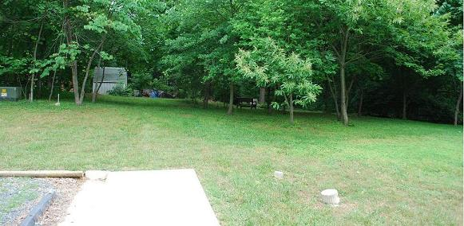
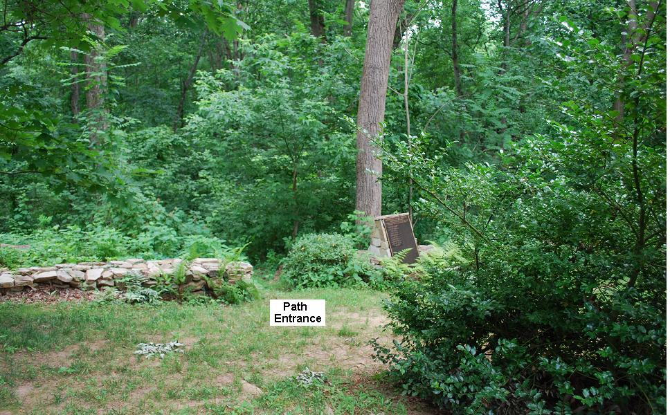
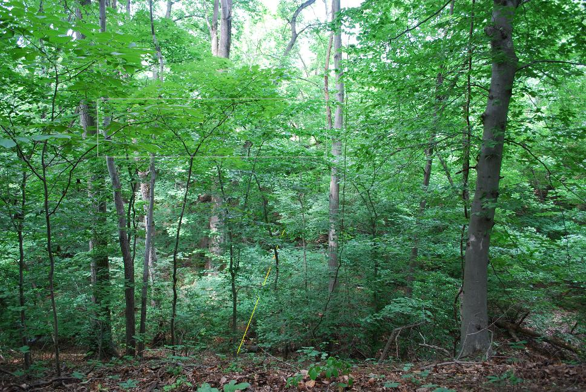
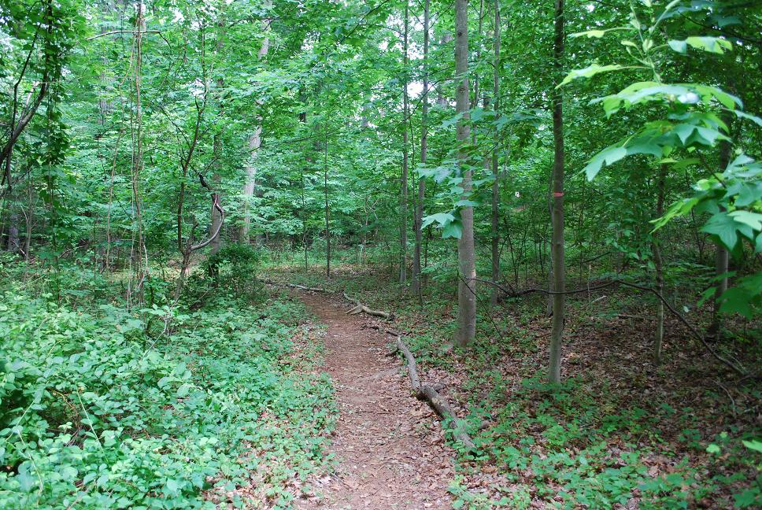
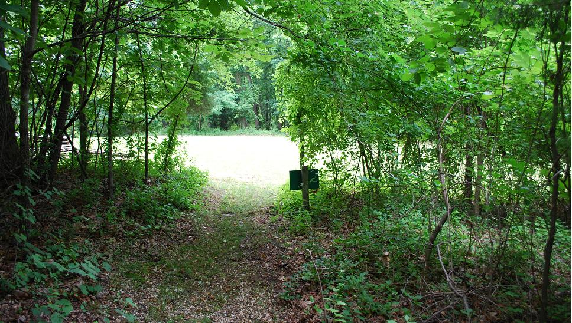
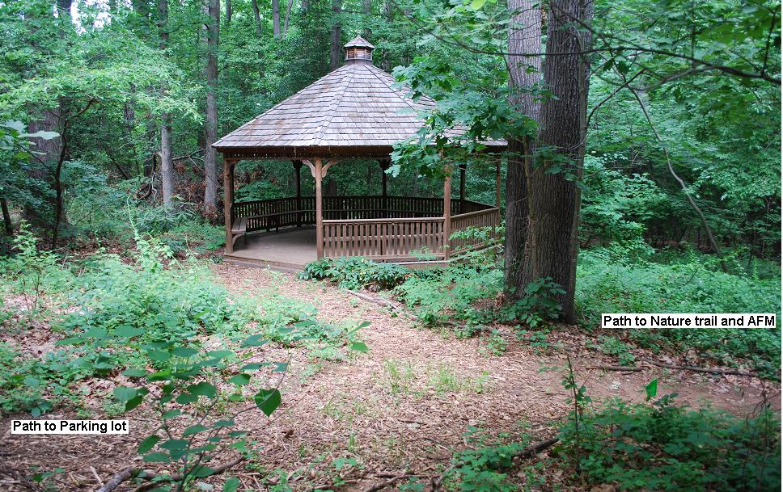
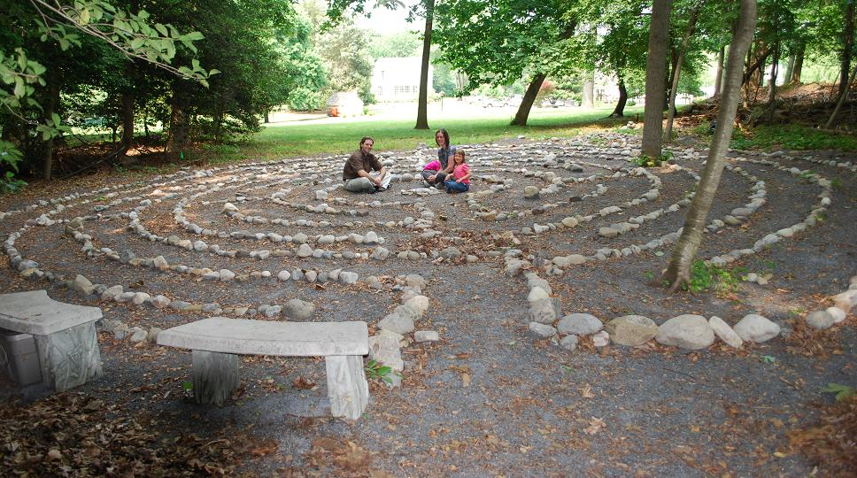

AFM/UU Interfaith Environmental Trail
Bob Bruninga, lastname@usna.edu, Annapolis, MD
This page is just part of Our Environmental Projects
Present 2016: When our neighbor's property on Dubois Rd was completed and readied for sale, the Anapolis Friends Meeting negotiated a permanent trail
easement (shown in yellow below) to allow rightful access to a trail connecting the Annapolis Friends Meeting (AFM) property
with the Unitarians (UUs) property. This permanent easement formalizes our mutual shared
values, faiths, and love of nature. The trail not only highlights the
flora and fauna of our environment, but also the significant environmental protection and energy investments
that both groups have made towards sustainable living.
Our Neighborhood: In our busy daily lives as we zoom in and out
of our parking lots and meetings, and services,
we are hardly aware of the large wilderness on our joint properties as shown above.
It is helpful to look at this area from the perspective of
an overall watershed and nature system instead of just the 4 borders of our lots.
See the surrounding property map.
 AFM/UU Interfaith Environmental Trail: Besides the natural beauty of the area, we hope to mark the salianet sustainability, runoff and energy investments on our properties listed here at right. This includes the large solar array in the front of the AFM Meeting house and the underground Geothermal HVAC system at the UU's as well as the adjacent Catholic water management ponds. Recently the UU's have invested in rain gardens to
prevent runoff polution of the Chesapeak Bay and this includes permeable concrete walkways.
AFM/UU Interfaith Environmental Trail: Besides the natural beauty of the area, we hope to mark the salianet sustainability, runoff and energy investments on our properties listed here at right. This includes the large solar array in the front of the AFM Meeting house and the underground Geothermal HVAC system at the UU's as well as the adjacent Catholic water management ponds. Recently the UU's have invested in rain gardens to
prevent runoff polution of the Chesapeak Bay and this includes permeable concrete walkways.
The rest of this page covers the detail
on the AFM and Unitarian portions of the trail. We are happy to add sections or links for other
groups' efforts.
See our other Environmental Projects
------------------------------------------------------------
Over the past decade, the Annapolis Friends Meeting and Unitarians have long been involved in
protecting the natural beauty of this area between Dubois and Lawrence roads
with nature trails as shown below.
Although the south side of the creek
has been a dumping ground for most of the last century, most of it is grown over. Several
annual clean ups have been sponsored by the Unitarians, Quakers,
Severn River Keepers and even some Naval Academy midshipmen. Each event results in
the removal of tons of junk and surface debris from old cars and appliances
and thousnad of broken bottles.
Some History and a Photo Walk of the Trail:
Annapolis Friends Meeting is concerned for the environment and began a number of
efforts in this regard.
Back in June 2011 we were having meetings
in consideration of
adjacent properties and how to protect the wilderness.
We realized that it might be nice to have a photo tour
of how our trail connects to the Unitarian trails.
 This web page
attempts to capture this small protion of the trail shown here.
Our own AFM trail system circles our lot by going
off the map to the right and circles around down into the Luce Creek ravine
and comes back up behind our solar panels.
This web page
attempts to capture this small protion of the trail shown here.
Our own AFM trail system circles our lot by going
off the map to the right and circles around down into the Luce Creek ravine
and comes back up behind our solar panels.
The AFM and Unitarian trails:
Currently access to the AFM trail is from the hallway door and out the sidewalk
to the east as shown below[A]. As seen on the map to the right, the trail proceeds along
our eastern property line down into the ravine (D) and up the other side. There (at E) it turns
left towards the Unitarians. The trails in our ravine encroach slightly on adjacent property
owners and we hope to correct that in the future.

Begin : From our Quaker meeting house and the end of the sidewalk we walk past our memorial garden
on the right and down into the woods as shown below[B].

Past our Memorial Garden : This trail above heads on a gentle slope down into the ravine[C].

Down the Hill: The path is left adjacent to our eastern property line and passes
between two large tulip Poplars at the bottom of the ravine. Notice that the creek bed is
completely dry at this end of the property[D]. Just prior to this photo is the turn to
the right that gets you onto our circular trail down into our ravine, across the creek,
then down into the Luce Creek ravine and then back up at the end of Dubois Road behind
our solar panels.

Climbing the Other Bank: Before 2016, we had to climb the hill with these 25 steps to the top of the hill
and then turn left into the UU trails. But with the new trail easement, one simply
turns left where standing in the photo above, and just follow the trail in the bottom
of the ravine across our new permanent trail easement and then onto the existing UU
trails.
But, before heading towards the Unitarians you
can pivot to the right at the top of the hill to see some more views.
Point Pleasant: This is not our poperty nor the UU's and so we should stay out of this area.
We hope to put up some kind of aesthetically pleasing indication that this property
is private and should be respected. Looking opposite from the direction of the Unitarian path (above)
you can see a very large tree with a hole under it (below)[F]. Behind this tree from the left
is a dip from our neighbor's private property down into the ravine (to the right.
The outline of our meeting house is shown with a yellow line.

The View to AFM:
Looking further to the right almost back from whence you came, you can see the AFM
building brick colors seeping through the trees in the ravine
and the light from the treeless area of our AFM property. The winter view of the
AFM meeting house will be in the area highlighted here with a yellow box. In the lower center of
this view is a yellow line strung across the ravine whre a dream bridge could be built
(see walkway page).
Again, the yellow box outlines the AFM building which is hard to see through the trees[G].

Continuing Towards the UU's: Completing your 360 degree turn to the right, where
teh simulated signs are located, you can then proceed down the path towards
the Unitarian Trail System[H].

Overall Area Map: At this point it might be a good idea to take a look at an overall map
(bottom of page) of the entire
area to help you get your bearings. The large image below covers all the trails between
the Unitarians and AFM. Notice, that the area behind our meeting house belongs to our neighbor and should not
be used. This map does show our AFM circular trail.
This path from that four-corners area extends eastward (to the left in this southern view)
probably 100 yards towards the Unitarians[I].

The Unitarian Nature Trail: Once into the Unitarian Trails System you will notice many trees are marked with
nature trail placards and can see an occasional bench for the foot weary as shown below[J].

The Unitarian Field: A side path to the south opens up into the nice green field that marks the western end
of the Unitarian property and is open to Lawrence Ave.

This field marks the western end of the existing Unitarian property. On the
far side of this field is the property line to the lot that was sold to another
owner on Lawrence in the 2010 time frame. The right end of that property line
runs into the AFM eastern property line.

The Unitarian Gazebo: Turning back to the east, you come to a path to a gazebo in the woods. This
seems to make a nice quite place to have a meeting or gathering. For any
future ideas for AFM, I might suggest a structure with a translucent roof
so that the light can shine in. The tree canopy provides plenty of shade
for the structure, so the roof is only need to protect from rain. A central
fire place could extend the useable seasons of such a structure.

The Trail to the UU's: Turning back from the gazebo, the trail winds through the woods towards their
building compex.

The Unitarian Memorial Garden: The paths eventually come out into the Unitarian Memorial Garden above.

The Labrynth: But first if you turn to the left you can see their Labrynth. The first time I walked
through, I saw a kid patiently tracing his way thorugh the maze. Later when I came
back with my camera, I found this family sitting in the middle of the Labrynth. The UU's
have an annual Summer Program for kids called
Camp Beagle
that involves kids outdoors learning about the environment.

The UU's Garden and Deck:
Turning back to the right and entering the Memorial Garden gives a good view of their
memorials and one end of their church building. If you continue to the left up and across the
Unitarian parking lot at the border with the St John Neuman Catholic Church you can see their water-run-off colection pond which is an excellent example of protecting the Bay.
------------------------------------------------------------
We have played with lots of imaginary dreamy ideas for our property such as a far future project to visualize a possible
elevated walkway
across the ravine.
Bob Bruninga
lastname @ usna.edu
------------------------------------------------------------
Return to AFM Environment
Return to Annapolis Friends Meeting
{kind=link}